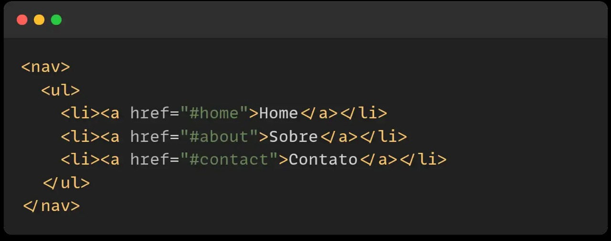

Qual a maneira correta de usar a TAG NAV?
-
Definição: A NAV é usada para marcar uma seção que contém links de navegação, tornando o código mais semântico e organizado.
-
Acessibilidade: Ajuda leitores de tela e mecanismos de busca a identificar áreas de navegação, melhorando a experiência do usuário.
-
Uso adequado: Deve ser usada para menus principais, links de categorias ou qualquer agrupamento significativo de links de navegação
-
Boa prática de CSS: Pode ser estilizada com display: flex; ou grid para melhorar a organização do layout
-
SEO (Otimização para motores de busca): Ajuda os buscadores a entender melhor a estrutura do site, favorecendo indexação e ranqueamento.
-
Evite uso desnecessário: A NAV não deve ser usada para agrupamentos de links que não estejam relacionados à navegação.
